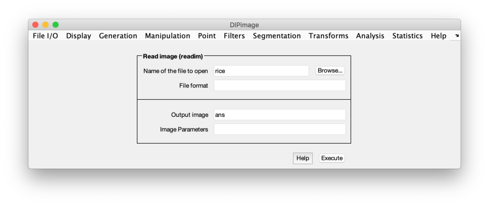
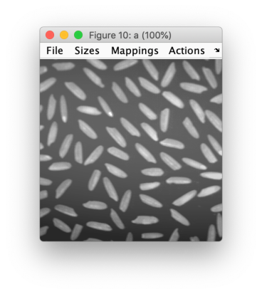
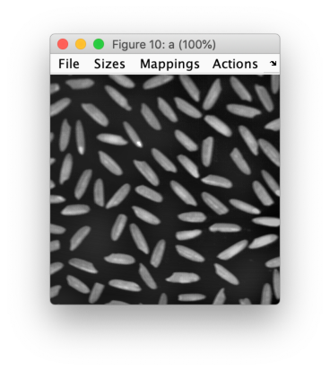
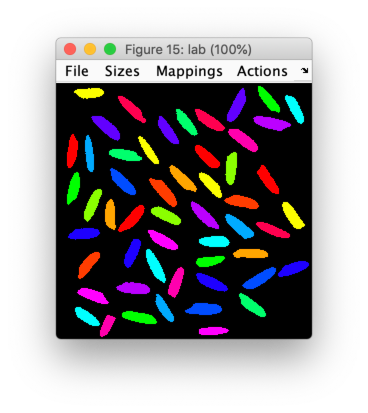
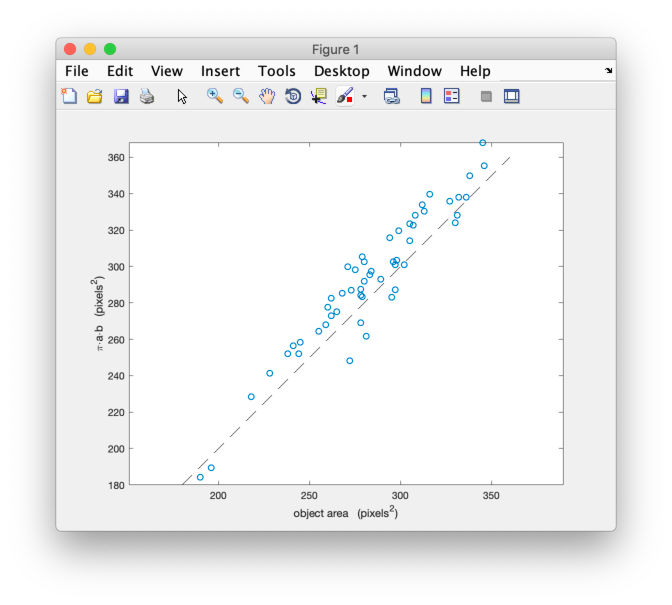

Getting Started
Contents
To show you around DIPimage, we will work through a simple image analysis application. Not all steps will be written out explicitly, since it is our goal to make you understand what is going on, and not to have you copy some commands and stare in amazement at the result.
The goal of this application is to do some measurements on an image of some rice grains, then analyze these measurements.
Starting the GUI
Type the following command at the MATLAB prompt:
dipimage
This should start the DIPimage GUI. A new window appears to the top-left
of the screen, which contains a menu bar. Spend some time exploring the
menus. When you choose one of the options, the area beneath the menu bar
should change into a dialog box that allows you to enter the parameters
for the filter you have chosen. See also
The GUI: dipimage and Graphical user interface for more info on the GUI.

Loading and displaying an image
Before you can use these functions, you first need to load some image.
The first menu is called “File I/O”, and its first item “Read image
(readim)”. Select it. Press the “Browse” button, and choose the file
rice.tif. Change the name for the output variable from ans to a,
then press the “Execute” button. Two things should happen:
-
The image ‘rice’ is loaded into the variable
a, and displayed to a figure window:
-
The following lines (or something very similar) appear in the command window:
>> a = readim('c:\dip\share\images\rice.tif','') Displayed in figure 1
This is to show you that the same would have happened if you would have typed that command directly yourself, without using the GUI. Try typing this command:
a = readim('rice')
The same image should be loaded into the same variable, and again
displayed to a window. Note that we left off the '.tif' ending of
the filename. readim can find the file without you having to specify
the extension. We also didn’t use the second argument to the readim
function, since '' is the default value. Finally, by not specifying a
path to the file, we asked the function to look for it either in the
current directory or in any of the directories specified by the
ImageFilePath setting (see Other settings).
To avoid having the image displayed in a window automatically, add a semicolon to the end of the command:
a = readim('rice');
Pre-processing the image
You will have noticed the heavy background shading in this image. If we
try to segment it directly, the results will be unsatisfactory (as you
can try out later). Let’s do some background correction. The idea is to
use a low-pass filter that removes the objects while keeping the slow
change in the background. Choose “Filters” and “Gaussian filter”. Select
a as the input image, and choose a name for your background image (we
use bg). Finally, choose a suitable value for the “Sigma” parameter,
such that the objects are removed and the background shading is left.
Try different settings until you are satisfied with the result.
Once we have the background image, we can subtract it from the original image. It is very easy to do arithmetic with images in MATLAB. Type
a = a - bg
The new image should be displayed to a figure window, but it looks very dark. This is because the pixels have lower values now, some even have negative values. By default, images are displayed by mapping the value 0 to black, and the value 255 to white. You can change this by choosing a different mapping mode. Open the “Mappings” menu on the figure window, and choose “Linear stretch” (try out the other modes too).

The “Actions” menu allows you to choose what the mouse should do on the figure window. Select “Pixel testing”, and press the mouse button while pointing somewhere in the image (keep the button down). The figure caption changes to show the coordinates of the mouse in the image and the value of the pixel at those coordinates. Try moving the mouse while holding the button down. Another option on the “Actions” menu (“Zoom”) is used to zoom in on an image. Try it out too. See Figure Windows for more information on the figure windows.
The next step is to segment the image. We need to find some threshold that distinguishes the grains of rice from the background. To find it, we can examine the histogram of the image. Choose “Histogram” on the “Statistics” menu, or type
diphist(a,[])
The graph shows two peaks, one for the background, one for the objects. Find a value in between for the threshold. To do the segmentation, compare all pixel values with the threshold, which can be done in this way:
b = a > 20
This results in a binary image (logical image, containing values of “true” and “false”, coded as 1 and 0), with ones at the pixels that belong to the objects. This image is displayed in red and black to emphasize that it is a binary image rather than a grey-value image with only two different grey values. Binary images have different characteristics than grey-value images, for example they can be used to index into other images, just like MATLAB‘s logical arrays.
The final step is to remove the grains that do not completely lie inside
the image. We can do this using a binary operation. Find and execute the
“Remove edge objects” function in the menu system. What it does is the
same as the bpropagation function, with an empty image as a seed
image, and the edge condition set to 1. To create an empty seed image
use the newim function. Thus, these two commands are equivalent:
b = b - bpropagation(newim(b,'bin'),b,0,2,1) b = brmedgeobjs(b,2)
Measuring
Before we can start measuring, it is convenient to have a label image.
Select the “Label objects” item on the “Segmentation” menu, and select
the new object image as the input. The result (name the image lab) is
a labeled image where the pixels belonging to each object have a
different value. In the window of the new image, select the “Labels”
mapping. Now each grey value gets a different color. Examine the pixel
values to see how the objects are labeled.

Now do the measuring. We will measure the object area in pixels
('Size') and the Feret diameters ('Feret'), which are the largest
and smallest diameters, and the diameter perpendicular to the smallest
diameter.
data = measure(lab,[],{'Size','Feret'});
measure returns an object of type dip_measurement, which is
explained further in The dip_measurement Object. Leaving the
semi-colon off the previous command, the complete measurement results
are displayed at the command prompt. Furthermore, data(1) is the
measurement results for object with label 1, data.Feret is an array
containing all the Feret diameters, and data(1).Feret are the Feret
diameters for object number 1.
To extract the measurements done on all objects and put them in an array, type
feret = data.Feret; sz = data.Size;
This gives us arrays with the measured data. MATLAB allows all kinds of
statistics and analysis on these arrays. For example, mean(sz) gives
the mean grain area.
We will use scatter to find some correlation between the diameters and
the area of the grains. Let’s start by plotting the length of the grains
against their width:
figure; scatter(feret(:,1),feret(:,2))
Apparently, they are mostly unrelated. Let’s try a relation between the length and the surface area:
scatter(feret(:,1),sz)
These appear to be more related, but, of course, the area also depends on the width of the grains. If we assume that the grains are elliptic, we know that the area is . Let’s plot the calculated area against the measured area:
calc = pi/4 * feret(:,1) .* feret(:,2); scatter(sz,calc)
Wow! That is a linear relation. We can add a line along the diagonal to see how much the ratio differs from 1 (the other commands are to make the figure look prettier):
hold on plot([180,360],[180,360],'k--') axis equal box on xlabel('object area (pixels^2)') ylabel('\pi{\cdot}a{\cdot}b (pixels^2)')

The actual slope can be computed by:
f = sz\calc
(this is the lest-squares solution to the linear equation sz*f = calc).
Where to go from here
If you are new to MATLAB, it would be a good idea to read the “Getting Started with MATLAB” manual. If you are new to image processing, you can read “The Fundamentals of Image Processing”.
Before you start using this toolbox, we recommend that you read
The dip_image Object (at least Review of the differences between a dip_image and a MATLAB array).
It contains very important information on the dip_image object and its
usage. Since it is not the same as a regular MATLAB array, it can be a
bit confusing at first.